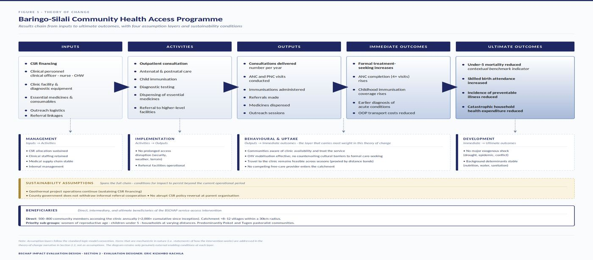
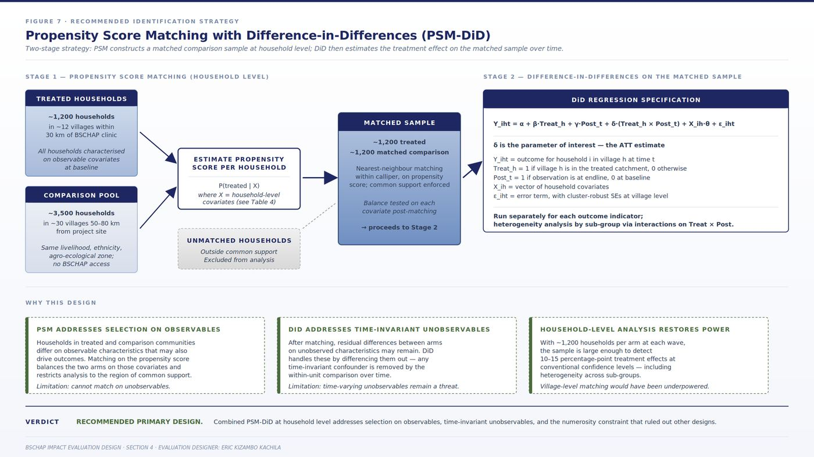
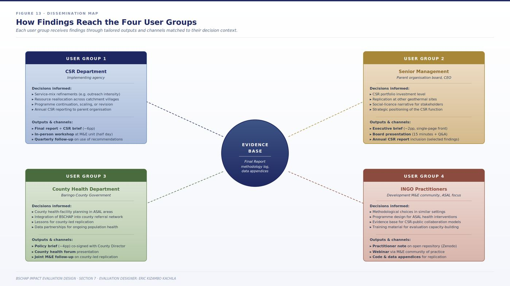

A quasi-experimental design for a CSR-funded health programme serving pastoralist communities in Baringo County, Kenya, where the catchment was too small for village-level inference and randomising access to primary care was never an option.
GDC built a clinic for its own workforce at the Baringo-Silali project site, then opened it to the surrounding communities because the nearest public facility was several hours away and unreachable in the rains. The programme has run for years and had never been evaluated.
Primary care access is already known to improve health outcomes, so asking whether the clinic works would have produced an answer nobody needed. I framed the evaluation question around magnitude instead: how much, for whom, and at what cost per shilling of CSR spend. That reframing is what makes the findings usable for a resourcing decision.
The programme was never designed as a research intervention, so the causal model had to be rebuilt for evaluation purposes. The design separates the intervention's mechanism from the conditions it depends on, and puts most of the analytical weight on the behavioural and uptake layer, because a supply-side clinic only works if people cross the threshold.

The methodological core of the document is an elimination argument. Each candidate design is worked through as it would actually operate here, then rejected or retained for a stated reason. Documenting why the stronger designs were unavailable is what licenses the one that remains.
Propensity score matching builds a comparison sample from roughly 3,500 households in villages 50 to 80km away that share the same livelihood system, ethnicity and agro-ecological zone. Difference-in-differences then estimates the treatment effect on that matched sample across two survey waves.

Seven indicators sit across the results chain. The design is explicit about which ones the sample can actually support and which one cannot, rather than reporting all seven as though they were equally defensible.
| Indicator | Level | Analytical treatment |
|---|---|---|
| Treatment-seeking rate | Immediate | Primary quantitative indicator. Enough household-level variance for difference-in-differences. |
| Antenatal care completion, 4+ visits | Immediate | Primary quantitative indicator, pooled across multi-year recall to widen the analytical sample. |
| Full childhood immunisation | Immediate | Primary quantitative indicator. Coverage rates support inference at catchment level. |
| Skilled birth attendance | Impact | Quantitative, using retrospective birth histories pooled across catchment villages. |
| Catastrophic health expenditure | Impact | Quantitative. Household-level measure with adequate variance for inference. |
| Incidence of preventable illness | Impact | Quantitative at household-episode level, triangulated against clinical registers. |
| Under-5 mortality rate | Impact | Descriptive and contextual only. The catchment is too small to power a rare-event causal test, so it is benchmarked against district and national rates rather than used as evidence of effect. |
Under-5 mortality is the outcome that matters most and the one the design cannot claim. Saying so up front is more useful to the commissioning body than an underpowered estimate presented with confidence it does not have.
The qualitative strand runs in parallel rather than following the numbers to explain them. It tests the assumptions the causal estimate depends on, and picks up consequences that sit outside the indicator set entirely.
Which parts of the service mix actually changed behaviour, and what kept some households away even once the clinic was open. Non-users are sampled deliberately, because a question about why people did not change cannot be answered by talking only to people who did.
Whether women felt safe and respected at the clinic, and how household decision-making shaped their access to maternal services. These barriers are largely invisible to a household survey run by mixed-gender enumerators.
Effects outside the indicator set: community relations with GDC, the shifting role of traditional healers, and equity in who actually reaches the clinic.
Evaluations more often fail at use than at method. One evidence base sits at the centre, and each user group gets an output sized to the decision it faces, timed to land before that decision is made rather than after.

Written in the evaluator's voice. Runs from intervention selection and question framing through theory of change, identification strategy, mixed-methods design, implementation framework, and dissemination. Includes the team composition, 38-month schedule, costed budget, and an eight-item risk register.
The same intervention seen from the commissioning side, written in the institutional voice a client would use to procure this work. Specifies required methodology and its justification, deliverables, team qualifications, budget envelope, evaluation criteria for bids, and dissemination as a contractual deliverable rather than an afterthought.
GDC and the Baringo-Silali Community Health Access Programme are real. BSCHAP has run for several years and has genuinely never been formally evaluated, which is the actual gap this design responds to. What's illustrative is the evaluation itself: it hasn't been executed, so every sample size, baseline rate, budget line and power calculation on this page is a planning estimate, not a measured value, produced to demonstrate how the evaluation would be designed if commissioned.
This is a portfolio artefact, not a commissioned evaluation or a published finding. Nothing here reports results, and no claims are made about BSCHAP's actual impact. The document exists to demonstrate how a credible counterfactual can be constructed where randomisation is neither ethical nor statistically viable.